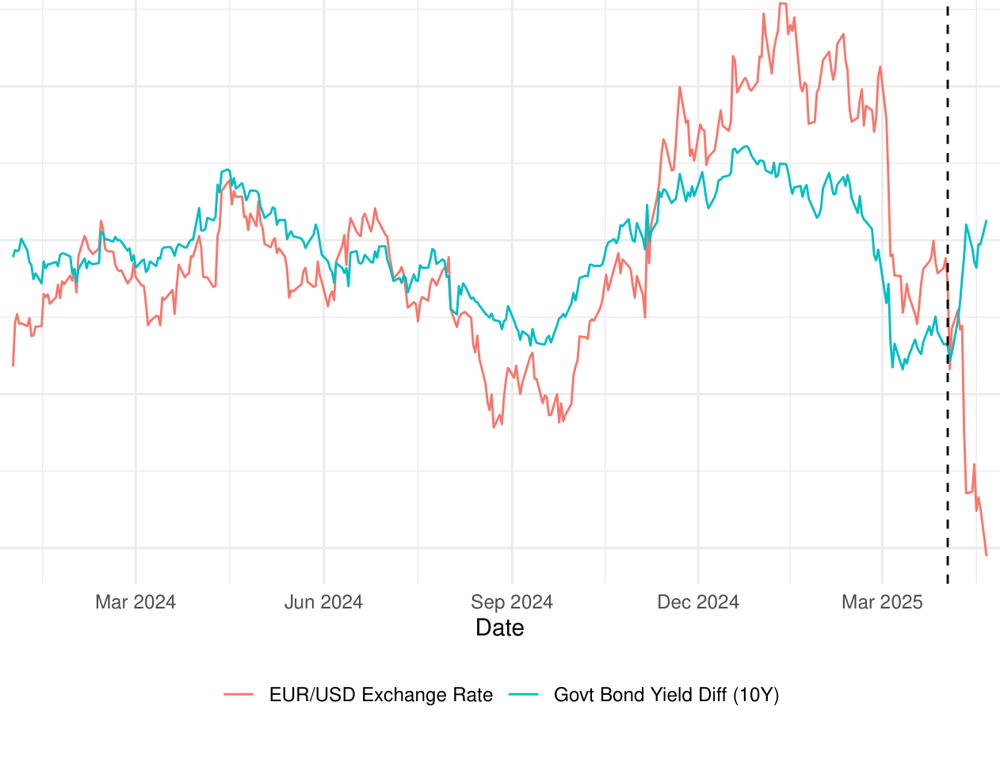
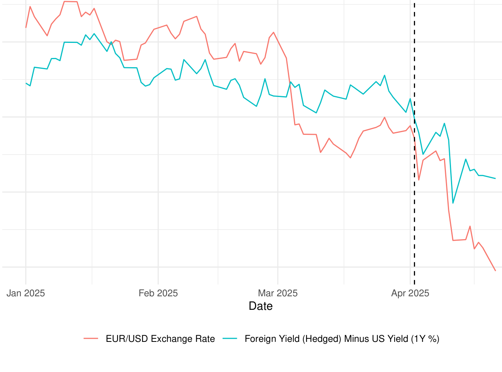
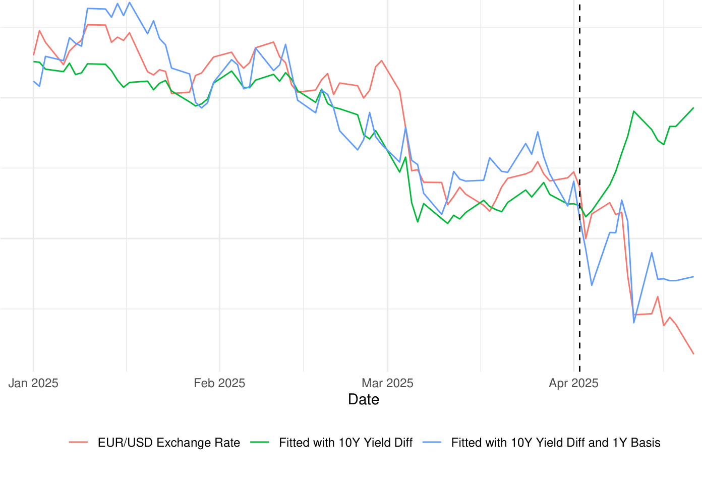
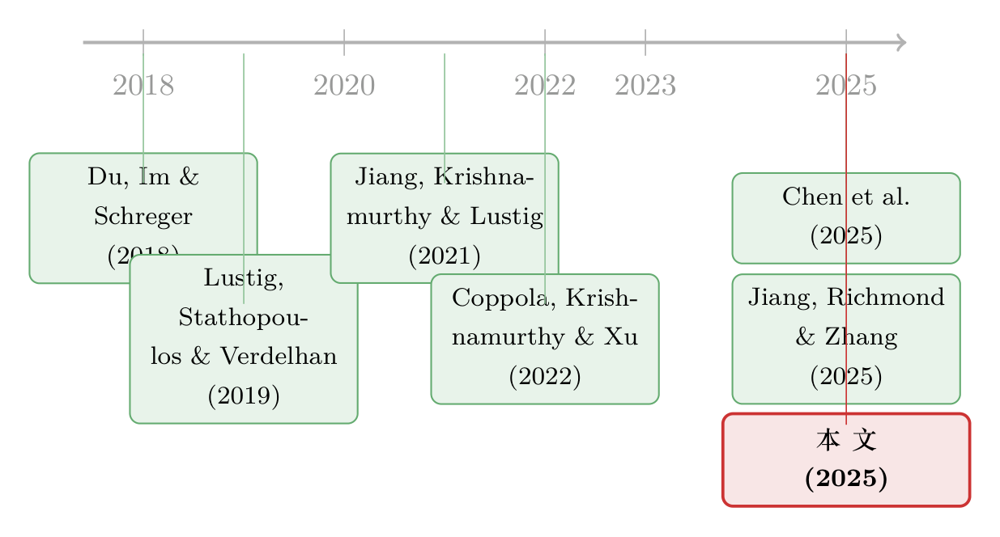

这一次，美元贬给了谁看？——从一次「反常」的贬值，读出储备货币地位的松动
本文读的是 Jiang, Krishnamurthy, Lustig, Richmond & Xu (2025, SSRN)：2025 年 4 月初的关税冲击之后，美元在美国利率不升反涨、市场波动飙升的背景下，对欧元贬值了 6.5%——这违反了「危机里美元升值」的铁律。作者用国债市场的高频价格信号给出一个解释：外国投资者为美元安全资产「多付钱」的意愿在迅速下降，市场开始重新打量美元的储备货币地位。
1 引言：一次教科书没写过的贬值
先讲一个反常识的事实。
每当全球进入避险模式——2008 年的全球金融危机 (Global Financial Crisis, GFC)、2020 年 3 月新冠疫情骤起——美元几乎都会升值。原因人人会背：恐慌时全世界都往美元资产里挤，「逃向安全 (flight to safety)」，美元于是水涨船高。这几乎是国际金融里最稳的一条经验规律。
可是 2025 年 4 月，这条规律失灵了。
时间线是这样的：4 月 2 日，特朗普政府宣布对一长串国家加征「对等关税 (reciprocal tariffs)」；4 月 4 日，中国反制。衡量美股隐含波动率的 VIX 指数从 4 月 1 日的 22 一路冲到 4 月 8 日的 52——翻了一倍多，意味着市场预期标普 500 的年化波动率高达 52%。按老剧本，这种时候美元该大涨才对。然而从 4 月 1 日到 4 月 21 日，美元对欧元反而贬值了 6.5%。
避险情绪爆表，美元却在跌。This time is different——论文的标题，本身就是一句反问。
「这次不一样」在金融史上通常是个贬义词，往往是泡沫的墓志铭。但作者把它正过来用：他们想说的不是「这次涨法不一样」，而是「这次连那条最硬的避险升值规律都不成立了」——而这恰恰可能指向某种更深的结构性变化。
2 第一个谜：美元和利率「脱钩」了
接着，一个自然的问题是：会不会只是利率在捣乱？
毕竟汇率最经典的锚就是利差。如果美国利率掉头向下，资本外流、美元走弱，那也算情理之中。但偏偏相反——同一个窗口里，美国长端利率显著上行。10 年期美债与 10 年期德国国债 (Bund) 的收益率利差扩大了 48 个基点 (bps)。
这就尴尬了。利率上行，按理应该把资本吸进美元、让美元走强才对。作者搬出长期抛补利率平价 (long-run uncovered interest rate parity, UIP) 作为基准：如果美元 10 年期收益率相对欧元高出 48 bps、并维持十年，那么美元当下应该立刻升值约 4.8%。
结果呢？现实是贬值 6.5%。两者一减，缺口是 6.5% − (−4.8%) = 11.3%。

Figure 1
如图 1 所示，作者把 10 年美德利差（右轴）和欧元/美元汇率（左轴）画在一起。过去一年多两条线还大致同向，可到了 2025 年这一段，利率在涨、美元在跌，两条线公然分道扬镳。作者给它起了个很形象的名字：美元脱钩 (Dollar Disconnect)。
利率解释不了。那 11.3% 的缺口，到底是谁付的账？
3 真正关键的一步：国债基差 (Treasury basis)
到这里，论文的核心武器才登场。
作者把目光从「利率」移到了一个更细腻的价格信号上——国债基差 (Treasury basis)。它的构造听上去绕，但逻辑很干净：
拿一只 1 年期的德国国债，把它的欧元现金流通过外汇远期对冲成美元，这样就造出一只「合成美债 (synthetic Treasury)」——一只期限同样是 1 年、同样以美元计价、但底层是外国政府债的安全债券。再去看一只货真价实的 1 年期美国国债。两者都是「1 年期、美元计价、安全」的债，唯一区别是一个是真美债、一个是合成的。
把合成美债的收益率减去真美债的收益率，就是国债基差。（这套用交叉货币基差互换来计算的方法，最早由 Du, Im & Schreger (2018) 提出，本文沿用。）
这个差值为什么重要？因为它直接「称量」出了投资者愿意为持有真美债额外付出多少。
- 基差为正：合成债收益率更高、真美债收益率更低，意味着投资者甘愿压低收益、抢着持有美债——美债「贵」，这是美国国债享有的便利收益 (convenience yield) 的体现。
- 基差转负：真美债反而要给出更高的收益率才有人要——美债「便宜」了，外国投资者开始嫌弃它，转而青睐德国国债。
而数据给出的画面是惊心动魄的。这个基差在新冠之前一直为正——历史上美债总比外国债「贵」，这对作为发行方的美国财政部是个绝佳位置。可本届政府上台前夕、2025 年 1 月 17 日，1 年期国债基差还有 1.8 bps；到 4 月 21 日，它已经翻到 −18 bps。

Figure 2
如图 2 所示，自本届政府开始，日频上的欧元/美元汇率几乎是亦步亦趋地跟着国债基差一起往下走。这不是巧合——美债在「同口径」的比较下，相对德债变便宜了，市场在用真金白银质疑美国国债的安全性与流动性。
更要命的是，这种质疑看起来是长期的：同期 5 年期基差走阔了 18 bps，10 年期走阔了 17 bps。如果市场只觉得这是一阵短风，长端不会跟着动。长端也动了，说明市场把它当成一次制度性的转变。
4 把汇率拆开：便利收益的定价方程
然后，但真正关键的一步在于——怎么把「国债基差」这个 1 年期的小信号，翻译成 6.5% 这个汇率的大数字？
这就要用到 Jiang, Krishnamurthy & Lustig (2021)（下称 JKL）的汇率估值方程。它的思想是：今天的汇率，相对于它十年后的预期水平，等于未来十年里利差、便利收益与汇率风险溢价三者的贴现加总。
$$e_t - E_t[e_{t+10}] = \sum_{j=0}^{9} E_t[r^{US}_{t+j} - r^{EU}_{t+j}] + \sum_{j=0}^{9} E_t[cy_{t+j}] - \sum_{j=0}^{9} E_t[rp_{t+j}]$$
把最核心的这一个方程拆开来看：
和第 2 节用的长期 UIP 相比，这个方程多出来的恰恰是中间那一项 cy——便利收益。UIP 假装它不存在，所以才会把汇率算错。JKL 方程的精髓是：美元之所以「强」，不只是因为利率高，更是因为全世界愿意为美元的安全与流动性额外付钱，这份「溢价」本身就在支撑汇率。（关于把汇率拆回供给与需求、便利收益如何撑起美元的思路，可参见《美元为什么强？——把一条汇率曲线拆回它的「供给与需求」》。）
现在反转出现了。作者做了一道「信封背面」的算术：
第一步，量出便利收益跌了多少。4 月 1 日到 21 日，1 年期美债基差对欧元走阔了 10.7 bps。但基差只是冰山一角——按 JKL (2021) 的估计，美元安全资产真正的便利收益大约是国债基差的十倍。于是欧洲投资者赋予美元安全资产的便利收益，在这短短窗口里下降了约 1.07%。
第二步，看利率能补多少。要完全抵消这 1.07%/年的便利收益下滑、把美元托住，美国 10 年期收益率得相对欧元上行 107 bps。可现实只涨了 48 bps。
第三步，剩下的让汇率扛。107 − 48 = 59 bps/年的缺口，连续十年，没人补，只能由美元贬值来消化——59 bps × 10 年 ≈ 5.9% 的贬值。
而实际贬了 6.5%。5.9% 对 6.5%，几乎严丝合缝。

Figure 3
如图 3 所示，作者把汇率分别用「只含利差」和「利差 + 1 年期基差」两个模型去拟合。不含基差的模型完全错过了 4 月 1—21 日那一段贬值；一旦把便利收益（基差）放进去，拟合值就紧紧贴住了真实汇率，R² 约为 0.85。那个第 2 节里悬而未决的 11.3% 缺口，到这里终于有了着落——它是便利收益坍塌的影子。
5 这一次为什么「不一样」：从国债到整个美元
到这里还差最后一层。前面算出的 1.07%，只是「美债」这一种安全资产的便利收益下降。可作者要论证的，是一件更大的事。
把镜头拉回历史做个对照。GFC 最凶险的时候——2008 年 12 月，1 年期美债基差冲到 +101 bps 的高位：恐慌中外国投资者疯抢美债避险，美元随之升值。彼时欧洲投资者愿意为持有美债、而非其他美元安全资产，每年让渡约 1.01%；而若按 JKL 估计去看整个美元安全资产，他们愿意让出的回报超过 10%。那才是储备货币该有的样子。
如今呢？1 年期基差是 −18 bps，等于说欧洲投资者持有美元安全资产、相比其他安全资产，反而要额外索取 1.8%/年的补偿。便利收益不只是缩水，而是翻了符号——欧元安全资产的便利，如今在欧洲人眼里高过了美元安全资产。
这里有一个作者反复强调、也最见功力的推断：如果投资者只是重新定价了「美债」的安全性，那么按 1.07% 算，美元最多该贬 1.07%。可现实贬了 6.5%。汇率对国债基差走阔的敏感度之高，只能说明——投资者在逃离的不是美债，而是整个美元。便利收益的坍塌，正从国债蔓延到所有美元计价资产。
为什么市场会把这次当成「持久」的而非一阵风？论文点了几处制度性的引信：政府放风可能对外国持有美债收取「使用费 (user fee)」（经济顾问委员会主席 Stephen Miran 的提法），或把它们的持仓强制转换成更长期限；叠加美国联邦财政被广泛认为已不在可持续轨道上。Chen et al. (2025) 的历史证据更冷峻：一旦外国投资者开始质疑你「安全资产供给者」的身份，美国的财政能力本身就会受损。
这才是 Coppola, Krishnamurthy & Xu (2022) 那条大叙事的位置所在：储备货币历来栖身于安全且流动的政府资产供给最大的那个国家；从荷兰盾到英镑、从英镑到美元，每一次储备货币的更替，都发生在原供给国政府资产的安全性被打上问号之时。论文想说的是——2025 年 4 月那几天的债市与汇市，也许正在记录这样一个问号被画下的瞬间。
6 文献脉络
这篇短文的分量，几乎全压在它身后那条十来年的研究线上。
最上游是「美元便利收益」这一发现。Du, Im & Schreger (2018) 用交叉货币基差互换，第一次把「美国国债溢价 (Treasury premium)」量化出来——美债相对外国对冲后的安全债，系统性地更贵。接着 Jiang, Krishnamurthy & Lustig (2021) 把这份溢价升格为一个汇率理论：外国对美元安全资产的需求，通过便利收益直接进入汇率估值方程——本文那道「信封背面」的算术，骨架正来自这里。与此并行，Lustig, Stathopoulos & Verdelhan (2019) 论证了长期 UIP 在汇率均值回复时是个不错的基准，这给了本文第 2 节的「脱钩」一个合法的对照尺。

再往后，问题从「美元为什么强」转向「这份强会不会丢」。Coppola, Krishnamurthy & Xu (2022) 把便利收益接到储备货币更替的大历史上；Jiang, Richmond & Zhang (2025) 记录了长端国债基差近十年随美债供给上升而长期下滑的「便利流失 (convenience lost)」；Chen et al. (2025) 则把「嚣张特权 (exorbitant privilege)」的得与失接到了财政后果上。本文站在这条线的最末端，做的是一件别人没机会做的事——用一次高频的、近乎自然实验式的政策冲击，把这套理论摁到 2025 年 4 月那二十天的价格里，看它对不对得上。对得上。
7 评论与延伸（Q&A + 研究方向）
(a) 几个可能的疑问
Q：短短二十天、一个国家、几张图，这能叫「证据」吗？会不会只是事后讲故事？
这是最该警惕的地方。本文不是一项识别严谨的因果研究，而是一篇高频「事件解读 (event study)」式的政策评论：它的说服力来自三个量级的意外吻合——便利收益跌
1.07%、推出汇率该贬5.9%、实际贬6.5%，以及含基差模型R² ≈ 0.85。但样本就是一段时间序列、一对货币，没有反事实、没有截面，统计意义上谈不上「识别」。把它当成「理论与一次冲击高度自洽」更恰当，而非「证明」。
Q：国债基差走阔，难道不可能只是套利受限、交易商资产负债表紧张造成的技术性现象，而非「便利收益」？
这是替代解释里最强的一个。基差本质是抛补利率平价 (covered interest parity, CIP) 的偏离，而 CIP 偏离确实可由交易商资本约束驱动。本文把它整体解读为便利收益的信号，没有单独剥离套利摩擦这一块。不过有一点对作者有利：5 年、10 年期基差同步走阔，而长端套利的资产负债表压力通常没那么同向，这更像对「持久性」的定价，而非纯技术噪声。
Q：把国债基差乘以「十倍」外推到整个美元便利收益，这个 10× 靠谱吗？
这一步承重很大，却完全依赖 JKL (2021) 的一个估计值。作者也诚实——他们指出，若只用基差本身（不乘十倍），预测的贬值仅
1.07%，远小于现实的6.5%；正是「汇率对基差的高敏感度」反推出便利收益的崩塌波及了整个美元。换句话说，10× 不是凭空设的参数，而是为了让模型对上现实所隐含要求的量级——但它确实是结论稳健性的命门。
Q：和「美元微笑」「避险货币」这些旧说法到底差在哪？
旧框架说美元在危机里升值，是因为它是避险资产；本文不否认这一点，而是指出这次避险升值没发生，并把缺口精确地归到便利收益这一可测量的项上。差别在于：旧说法是定性的「美元很安全」，本文是定量的「市场为美元安全付的价，正在以每年百分之几的速度被重新定价」。
Q：会不会只是关税本身的基本面冲击——预期美国增长变差，所以美元跌？
增长预期变差通常压低美国利率，可这次长端利率反而上行了
48bps，这恰恰是本文整个谜题的起点，也基本排除了「单纯的衰退预期」叙事。利率上行 + 美元下跌的组合，更像「风险溢价/便利收益」而非「增长预期」在主导。
Q：标题说「这次不一样」，但万一关税被撤回，一切回到原点呢？
完全可能，这也是本文作为「working paper / 政策快评」的脆弱之处——它捕捉的是一个预期的快照。但作者的防线是长端基差：5 年、10 年期基差的同步走阔，说明市场把这次定价成持久变化。若日后基差回正、美元收复失地，那本文反而成了「市场曾经如何定价一次未兑现的制度风险」的有趣记录。
(b) 几个可能的研究问题与提案
1. 把「美元外逃」拆到投资者层面
【经济故事】本文只能看到加总价格（基差、汇率），无法看到谁在卖。是欧洲的官方储备管理者、保险/养老金，还是对冲基金在领跑这场「逃离美元」？不同持有人的撤离含义天差地别——官方部门的撤离才真正动摇储备货币地位。 【可行性】中。需要 TIC、各国央行储备构成、或基金持仓的高频数据，识别上可借关税公告做事件研究。难点是高频持仓数据稀缺，多数只到月频，与本文的日频证据存在颗粒度落差。
2. 美元便利收益坍塌如何外溢到美元公司债与信用利差
【经济故事】如果投资者逃的是「整个美元」而非仅仅美债，那么美元投资级公司债的便利收益、乃至美元信用利差，应当在同一窗口出现同向移动。这是检验本文「从国债到全美元」论断的一块独立证据。 【可行性】高。TRACE 提供美元公司债的高频成交，可构造「公司债便利收益」并对齐 4 月事件窗。这正落在公司债/信用市场的舒适区，数据现成、识别清晰，是本文最自然、最可做的延伸。（思路上与《无风险国债是「制造」出来的》对安全资产供给的讨论相通。）
3. 用「孪生债券」给美元便利收益做更干净的称量
【经济故事】国债基差混入了 CIP 套利摩擦。若能找到同一发行人、同期限、仅计价货币不同的「孪生债」，便可把便利收益从套利摩擦里剥离得更干净，检验本文 10× 外推是否稳健。 【可行性】中。可借鉴德国孪生绿债/常规债的思路（参见《绿色溢价真的归零了吗？》）。难点是美元/欧元跨币种的「孪生」样本稀少，可能要退而用超主权机构的多币种发行来近似。
4. 储备货币更替的高频「探针」：把 2025 放进历史断点的序列里
【经济故事】Coppola-Krishnamurthy-Xu 讲的是世纪尺度的更替。能否构建一个可持续追踪的便利收益指标，把英镑→美元的历史断点与 2025 这次并置，看市场质疑储备货币时的价格特征是否同构？ 【可行性】低到中。当代高频数据漂亮，但历史（荷兰盾、英镑时代）缺乏可比的对冲收益率序列，跨时代「同口径」几乎不可得，更适合做定性的历史金融对照而非统一计量。
评述者的判断
先说贡献。这篇文章的价值不在「方法新」——它几乎全部借用了 JKL (2021) 的方程和 Du-Im-Schreger (2018) 的基差。它的价值在时机与翻译：在一次罕见的、近乎自然实验的政策冲击发生的当口，作者用一套现成而严谨的理论，把「美元为何在该升值时贬值」这件让市场措手不及的事，翻译成了三个对得上的数字。5.9% 推出来、6.5% 摆在那、R² = 0.85——这种「理论遇上现实并且没翻车」的瞬间，本身就稀有且有说服力。
再说担忧，三条。其一，没有识别：单一时序、单一货币对、二十天窗口，谈不上因果，替代解释（套利摩擦、增长预期、单纯流动性挤兑）未被逐一排除。其二，10× 外推是命门：从国债基差到整个美元便利收益，全压在一个借来的参数上，结论对它高度敏感。其三，单货币：只对欧元做了文章，若对日元、瑞郎、英镑同样成立，论断会硬得多；只有欧元成立，则可能掺入欧元自身的特殊性。
后续我最想看到的，是把这套日频框架铺到截面上——多货币、多类美元资产（尤其公司债与信用市场）、多类持有人。如果「逃离美元」是真的，它应该在每一个角落都留下同向的、可测的指纹；如果它只是欧元这一处的偶然，那「这次不一样」就还只是个标题，而非结论。在尘埃落定之前，这篇短文最好被读作一份冷静的预警，而不是一纸判决书。
参考文献
- Chen, Zefeng, Zhengyang Jiang, Hanno Lustig, Stijn Van Nieuwerburgh, and Mindy Z. Xiaolan (2025). Exorbitant Privilege Gained and Lost: Fiscal Implications. Journal of Political Economy (forthcoming).
- Coppola, Antonio, Arvind Krishnamurthy, and Chenzi Xu (2022). Liquidity, Debt Denomination, and Currency Dominance. Working Paper.
- Du, Wenxin, Joanne Im, and Jesse Schreger (2018). The U.S. Treasury Premium. Journal of International Economics 112, 167–181.
- Jiang, Zhengyang, Arvind Krishnamurthy, and Hanno Lustig (2021). Foreign Safe Asset Demand and the Dollar Exchange Rate. The Journal of Finance 76(3), 1049–1089.
- Jiang, Zhengyang, Robert J. Richmond, and Tony Zhang (2025). Convenience Lost. Working Paper.
- Lustig, Hanno, Andreas Stathopoulos, and Adrien Verdelhan (2019). The Term Structure of Currency Carry Trade Risk Premia. American Economic Review 109(12), 4142–4177.